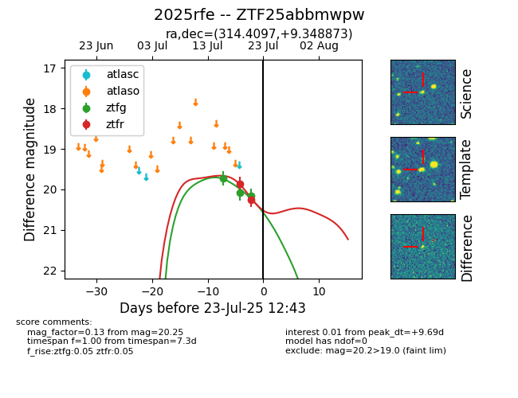

Target ZTF25abbmwpw at 2025-07-23 12:43, see:
FINK: fink-portal.org/ZTF25abbmwpw
Lasair: lasair-ztf.lsst.ac.uk/objects/ZTF25abbmwpw
ALeRCE: alerce.online/object/ZTF25abbmwpw
TNS: wis-tns.org/object/2025rfe
YSE: ziggy.ucolick.org/yse/transient_detail/2025rfe
alt names
ZTF25abbmwpw (ztf,fink)
2025rfe (tns,yse)
coordinates:
equatorial (ra, dec) = (314.4097,+9.34887)
galactic (l, b) = (57.2508,-22.67011)
photometry
last ztfg=20.16, ztfr=20.25
3 ztfg, 2 ztfr detections
